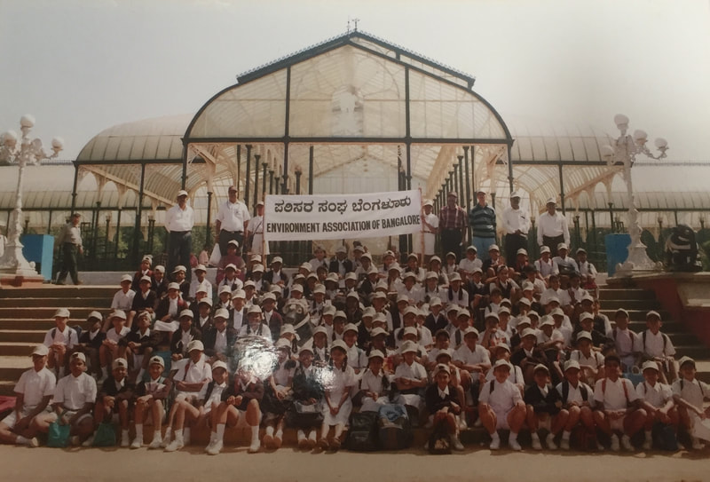
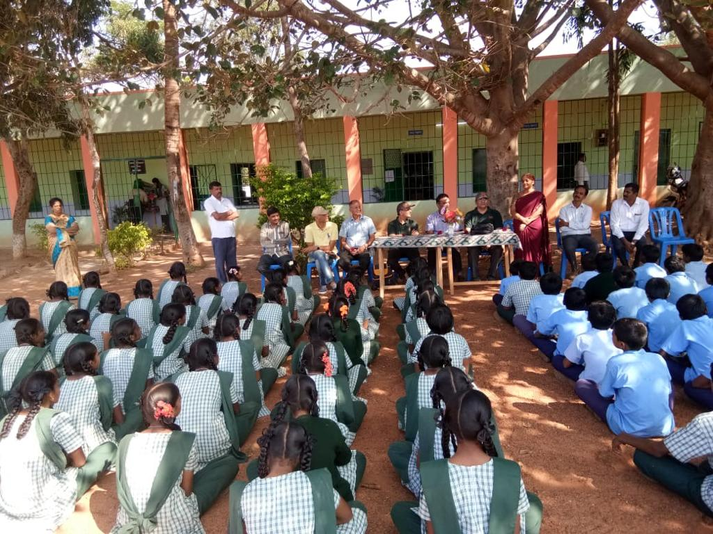
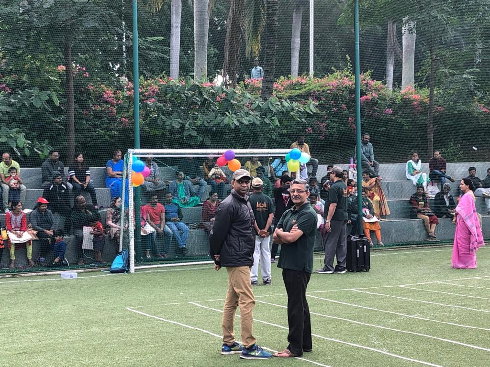
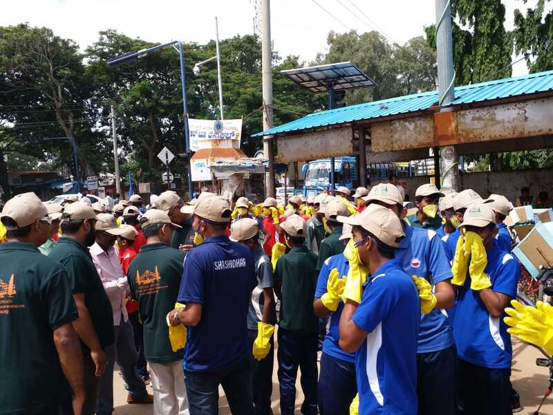
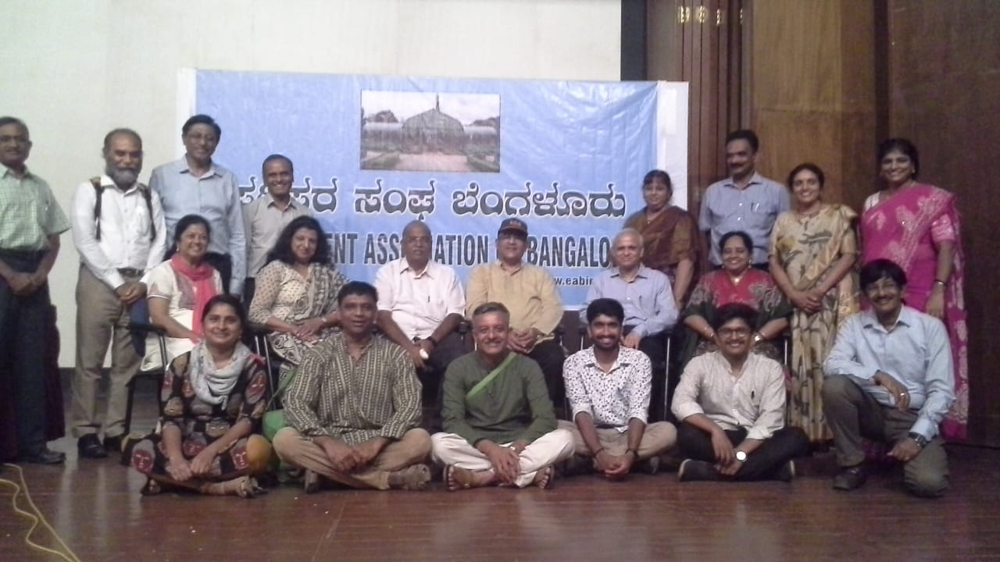
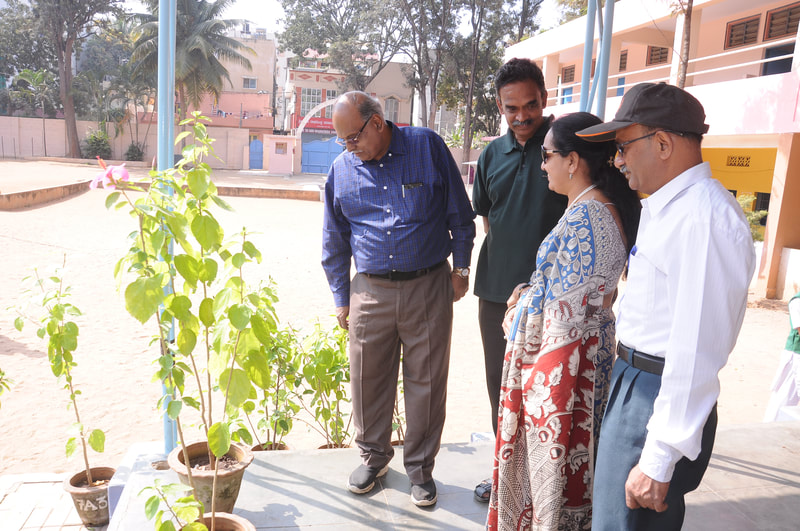
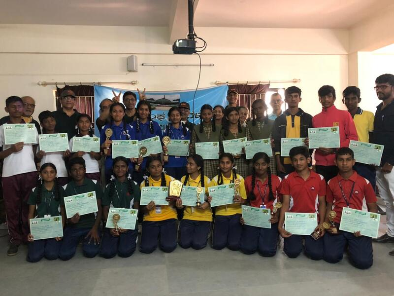

The rapid expansion of urbanization and the growth of
Bengaluru City and its population particularly during the last two
decades has resulted in undue and unforeseen pressures on the
existing civic infrastructure. This has led to several
environmental problems – such as high demand for housing
accommodation, intensive land use converting more open spaces into
unplanned housing layouts in the revenue sites, growth of slums,
breaching of several lakes to provide lands for buildings and
other amenities, including bus-stands, etc. felling of trees,
degradation in the public utility services, a lowering in the per
capita availability of water, woefully inadequate sewerage
systems, discharge of sewage, sludge, effluents and other kinds of
waste-water into storm water drains and natural drains resulting
in severe pollution of the remaining lakes and waterways, etc.
It was on January 25, 1996 that a small group of
professionals in various fields got together at a workshop that
was organized under the auspices of the Department of Space,
Government of India, in Bengaluru. The participants at the
workshop were drawn from agencies, such as the Department of
Space, the Indian Space Research Organization, the Forest
Department,0 the University of Bangalore, Bangalore Metropolitan
Regional Development Authority, the Bangalore Mahanagara Palike,
the Bangalore Water Supply and Sewerage Board, the Bangalore
Development Authority, the Karnataka State Pollution Control
Board, Academic institutions and also some environmentalists. The
participants at this brainstorming workshop reviewed the status of
a number of environmental indicators, with reference to Bangalore
City.
The group observed that, between them, they had a great deal
of talent and knowledge and experience available with them. Hence,
they resolved to work in a cohesive manner, so that they could
assist the various civic agencies and others in addressing at
least some of the environmental problems that were confronting
Bengaluru City.
In order to have a vehicle which could tackle environmental
issues in a cohesive manner, the group formed a Non-Governmental
Organization, called the Environment Association of Bangalore
(EAB). The first set of members – the founder-members – were drawn
from various governmental agencies, such as the Department of
Space and the Indian Space Research Organization, BWSSB, BDA, BMP,
BMRDA, Forest Department and University of Bangalore. EAB has the
strong feeling that with increased awareness, knowledge, skills,
attitudes, values, and motivation, the responsible citizens can
become more ecologically literate and act competently to build a
sustainable future for humans and ecosystems.

OBJECTIVES
The principal objectives of EAB are set out below:
To advance fundamental knowledge of water and environment,
their basic qualities and the physical laws governing their
interaction with aesthetic, economic and biological needs of the
Earth's inhabitants.
To advance practical knowledge in the technology, design,
construction, operation and management of water quality control
systems and facilities and related issues.
To increase the understanding of the nature and function of
the Earth's natural eco systems, encourage and promote actions
necessary to preserve and enhance them.
To exchange information and experience among its members
and other interested persons through organization of symposia,
conferences and exhibitions as well as through various
publications.
To promote public understanding and encourage sound
regional policies in matters relating to environmental issues
including surface and sub-surface water.
To improve the professional status of all personnel engaged
in any aspects of environmental issues including but not limited
to the design, management and operation of water quality control
systems.
To stimulate public awareness, undertake studies, recommend
solutions to problems.
The rapid expansion of urbanization and the growth of
Bengaluru City and its population particularly during the last two
decades has resulted in undue and unforeseen pressures on the
existing civic infrastructure. This has led to several
environmental problems – such as high demand for housing
accommodation, intensive land use converting more open spaces into
unplanned housing layouts in the revenue sites, growth of slums,
breaching of several lakes to provide lands for buildings and
other amenities, including bus-stands, etc. felling of trees,
degradation in the public utility services, a lowering in the per
capita availability of water, woefully inadequate sewerage
systems, discharge of sewage, sludge, effluents and other kinds of
waste-water into storm water drains and natural drains resulting
in severe pollution of the remaining lakes and waterways, etc.
It was on January 25, 1996 that a small group of
professionals in various fields got together at a workshop that
was organized under the auspices of the Department of Space,
Government of India, in Bengaluru. The participants at the
workshop were drawn from agencies, such as the Department of
Space, the Indian Space Research Organization, the Forest
Department,0 the University of Bangalore, Bangalore Metropolitan
Regional Development Authority, the Bangalore Mahanagara Palike,
the Bangalore Water Supply and Sewerage Board, the Bangalore
Development Authority, the Karnataka State Pollution Control
Board, Academic institutions and also some environmentalists. The
participants at this brainstorming workshop reviewed the status of
a number of environmental indicators, with reference to Bangalore
City.
The group observed that, between them, they had a great deal
of talent and knowledge and experience available with them. Hence,
they resolved to work in a cohesive manner, so that they could
assist the various civic agencies and others in addressing at
least some of the environmental problems that were confronting
Bengaluru City.
In order to have a vehicle which could tackle environmental
issues in a cohesive manner, the group formed a Non-Governmental
Organization, called the Environment Association of Bangalore
(EAB). The first set of members – the founder-members – were drawn
from various governmental agencies, such as the Department of
Space and the Indian Space Research Organization, BWSSB, BDA, BMP,
BMRDA, Forest Department and University of Bangalore. EAB has the
strong feeling that with increased awareness, knowledge, skills,
attitudes, values, and motivation, the responsible citizens can
become more ecologically literate and act competently to build a
sustainable future for humans and ecosystems.






GROWTH
Over the years, the membership became more broad-based with
persons drawn, inter alia, from industries, business
organizations, media, research and development organizations, and
educational institutions. EAB has grown considerably and now
boasts of a membership of over 160 environmentalists.
The founder-members observed that the Glass House of the
famous Lalbagh Garden in Bangalore is a well-known and easily
recognizable symbol. Hence, it was adopted as the emblem of the
Environment Association of Bangalore (EAB). The founder members
also made the EAB an affiliate of the Indian Environmental
Association, Mumbai and the Water Environment Federation, USA.
This was done so that there would be access to the latest
technology and ideas elsewhere in India and the world. Further,
the affiliation would also provide opportunities to members of EAB
to participate in seminars, workshops, etc. elsewhere.
The day-to-day matters of the EAB are managed by a Board of
Directors, which is elected by the General Body for a three-year
term.
EAB also has an Advisory Council with eminent persons being
invited to become members.